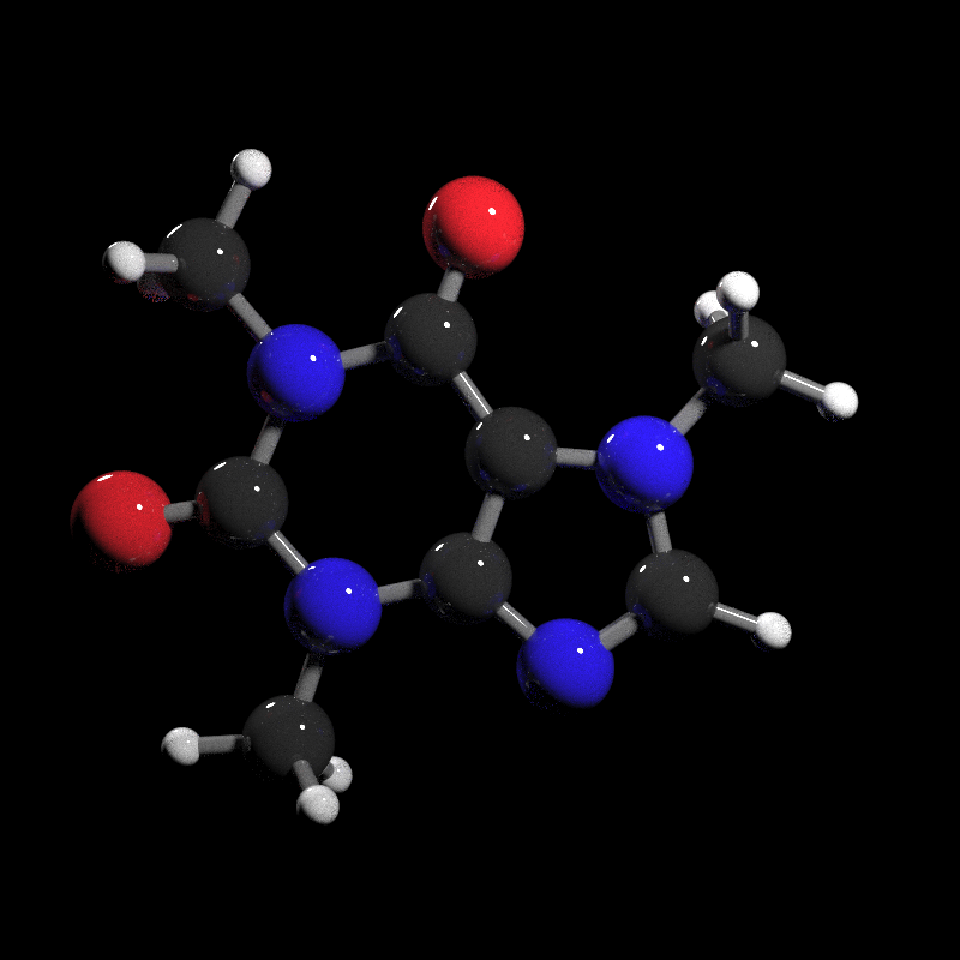

raymolecule

raymolecule is an R package to parse and render molecules in 3D. Rendering is powered by two packages: rayrender package, a pathtracer for R, and rayvertex, a rasterizer for R. raymolecule currently supports and parses SDF (structure-data file) and PDB (Protein Data Bank) files and returns a rayrender scene, which we then pathtrace and visualize in R. This initial release of the package only supports visualizing atoms and bonds.
Installation
You can install the released version of raymolecule from Github:
install.packages("remotes")
remotes::install_github("tylermorganwall/raymolecule")Examples
raymolecule includes several example SDF files for the following molecules: “benzene”, “buckyball”, “caffeine”, “capsaicin”, “cinnemaldehyde”, “geraniol”, “luciferin”, “morphine”, “penicillin”, “pfoa”, “skatole”, “tubocurarine_chloride”. You can get the file path to these example files using the get_example_molecule() function. We pass this path to the read_sdf() file to parse the file and extract the atom coordinates and bond information in a list. raymolecule also includes the ability to fetch molecules from PubChem using the get_molecule() function. The magrittr pipe is automatically imported in the package, so we will use it to pass the output of each function to the input of the next.
Here’s the format of the data:
library(raymolecule)
get_example_molecule("benzene") |>
read_sdf()
#> $atoms
#> x y z type index
#> 1 -1.2131 -0.6884 0e+00 C 1
#> 2 -1.2028 0.7064 1e-04 C 2
#> 3 -0.0103 -1.3948 0e+00 C 3
#> 4 0.0104 1.3948 -1e-04 C 4
#> 5 1.2028 -0.7063 0e+00 C 5
#> 6 1.2131 0.6884 0e+00 C 6
#> 7 -2.1577 -1.2244 0e+00 H 7
#> 8 -2.1393 1.2564 1e-04 H 8
#> 9 -0.0184 -2.4809 -1e-04 H 9
#> 10 0.0184 2.4808 0e+00 H 10
#> 11 2.1394 -1.2563 1e-04 H 11
#> 12 2.1577 1.2245 0e+00 H 12
#>
#> $bonds
#> from to number
#> 1 1 2 2
#> 2 1 3 1
#> 3 1 7 1
#> 4 2 4 1
#> 5 2 8 1
#> 6 3 5 2
#> 7 3 9 1
#> 8 4 6 2
#> 9 4 10 1
#> 10 5 6 1
#> 11 5 11 1
#> 12 6 12 1Alternatively, you can fetch any molecule from PubChem by passing either the molecule name. You can also fetch a molecule using the official compound ID (CID), in case you have a specific molecule with a long name or unique isoform:
str(get_molecule("estradiol"))
#> List of 2
#> $ atoms:'data.frame': 44 obs. of 5 variables:
#> ..$ x : num [1:44] 5.061 -5.857 2.664 1.984 0.515 ...
#> ..$ y : num [1:44] 1.15 0.148 0.584 -0.695 -0.78 ...
#> ..$ z : num [1:44] 0.2674 0.4388 0.1481 -0.3789 0.0353 ...
#> ..$ type : chr [1:44] "O" "O" "C" "C" ...
#> ..$ index: int [1:44] 1 2 3 4 5 6 7 8 9 10 ...
#> $ bonds:'data.frame': 47 obs. of 3 variables:
#> ..$ from : num [1:47] 1 1 2 2 3 3 3 3 4 4 ...
#> ..$ to : num [1:47] 7 40 20 44 4 7 8 13 5 9 ...
#> ..$ number: num [1:47] 1 1 1 1 1 1 1 1 1 1 ...
str(get_molecule(5757)) #this is the CID for estradiol (aka estrogen)
#> List of 2
#> $ atoms:'data.frame': 44 obs. of 5 variables:
#> ..$ x : num [1:44] 5.061 -5.857 2.664 1.984 0.515 ...
#> ..$ y : num [1:44] 1.15 0.148 0.584 -0.695 -0.78 ...
#> ..$ z : num [1:44] 0.2674 0.4388 0.1481 -0.3789 0.0353 ...
#> ..$ type : chr [1:44] "O" "O" "C" "C" ...
#> ..$ index: int [1:44] 1 2 3 4 5 6 7 8 9 10 ...
#> $ bonds:'data.frame': 47 obs. of 3 variables:
#> ..$ from : num [1:47] 1 1 2 2 3 3 3 3 4 4 ...
#> ..$ to : num [1:47] 7 40 20 44 4 7 8 13 5 9 ...
#> ..$ number: num [1:47] 1 1 1 1 1 1 1 1 1 1 ...We can then pass the list from get_example_molecule() |> read_sdf() or from get_molecule() to the generate_full_scene(), generate_atom_scene(), or generate_bond_scene() functions to convert this representation to a rayrender/rayvertex scene. This can then be passed on the render_model() function, which will call rayrender’s render_scene() or rayvertex’s rasterize_scene() functions to render it. This function automatically ensures the molecule is centered and in frame, and sets up lighting, and can accept arguments to rotate the molecule. For more rendering options, see rayrender::render_scene() and rayvertex::rasterize_scene().
#Specify a width, height, and number of samples for the image (more samples == less noise)
get_example_molecule("caffeine") |>
read_sdf() |>
generate_full_scene() |>
render_model(width=800,height=800,samples=1000, clamp_value=10)
#Light from both bottom and top
get_example_molecule("cinnemaldehyde") |>
read_sdf() |>
generate_full_scene() |>
render_model(lights="both",width=800,height=800,samples=1000,clamp_value=10)
#Rotate the molecule and add a non-zero aperture setting to get depth of field effect
get_example_molecule("penicillin") |>
read_sdf() |>
generate_full_scene() |>
render_model(lights="both",width=800,height=800,samples=1000,angle=c(0,30,0),aperture=3,
clamp_value=10)
We can use rayvertex to render images much more quickly and noise free, as well as include a toon cel-shading effect.
library(rayvertex)
#Render a basic example with rayvertex
get_example_molecule("tubocurarine_chloride") |>
read_sdf() |>
generate_full_scene(pathtrace=FALSE) |>
render_model(width=800,height=800,background="grey66")
#Customize the material with toon shading
shiny_toon_material = material_list(type="toon_phong",
toon_levels=,
toon_outline_width=0.1)
get_example_molecule("morphine") |>
read_sdf() |>
generate_full_scene(pathtrace=FALSE, material_vertex = shiny_toon_material) |>
render_model(width=800,height=800,background="grey66")
#Customize the lights with rayvertex
get_example_molecule("skatole") |>
read_sdf() |>
generate_full_scene(pathtrace=FALSE) |>
render_model(width=800,height=800,angle=c(0,30,0), background="grey66",
lights = directional_light(c(0,1,1)) |>
add_light(directional_light(c(0,-1,0),color="red")))
You can turn off lighting in render_model() and customize the scene (adding different objects or lights) by using rayrender’s add_object() function or rayvertex’s add_shape() function. If you use rayrender::render_scene()/rayvertex::rasterize_scene() instead of render_model(), you have to set up the camera position and field of view yourself.
library(rayrender)
buckyball = get_example_molecule("buckyball") |>
read_sdf() |>
generate_full_scene()
#Add custom lighting
buckyball |>
add_object(sphere(y=12,radius=3,material=light(color="white", intensity=50))) |>
add_object(sphere(y=-12,radius=3,material=light(color="red", intensity=50))) |>
render_model(lights="none",width=800,height=800,samples=1000, clamp_value=10)
#Generate ground underneath the model and use a light to cast a shadow
generate_ground(depth=-4,material=diffuse(sigma=90)) |>
add_object(buckyball) |>
add_object(sphere(y=8,material=light(intensity=100))) |>
render_scene(width=800,height=800,samples=1000,aperture=1,fov=30,lookfrom = c(0,1,30),
clamp_value = 10)